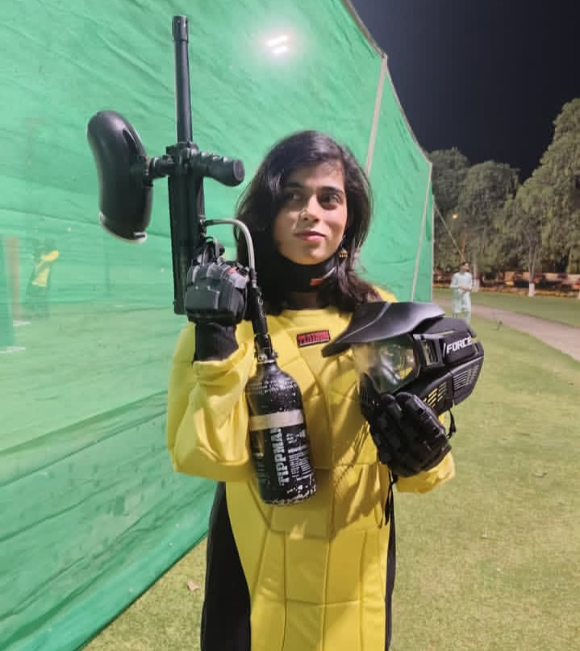
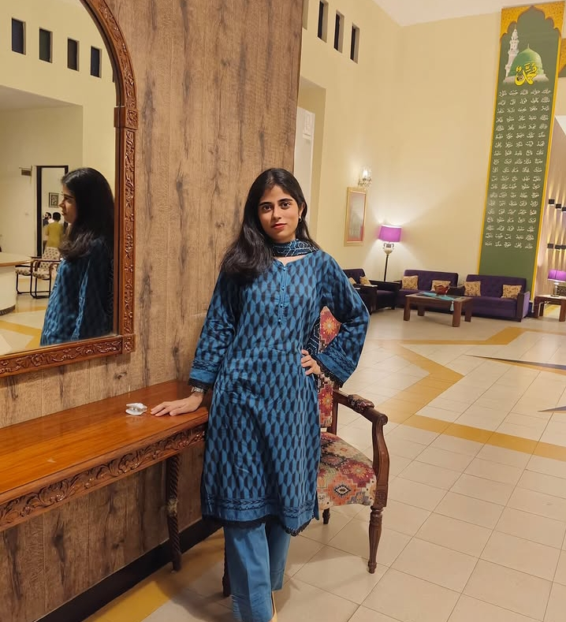
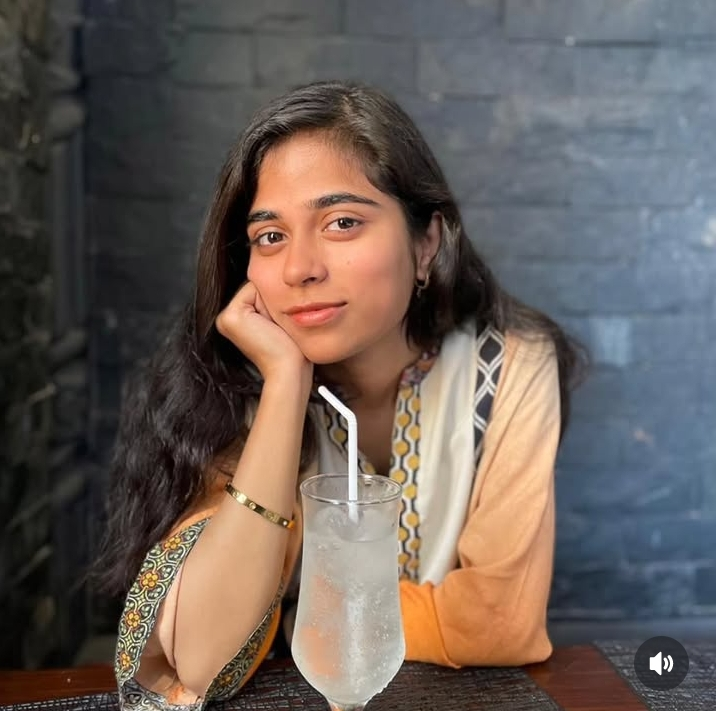
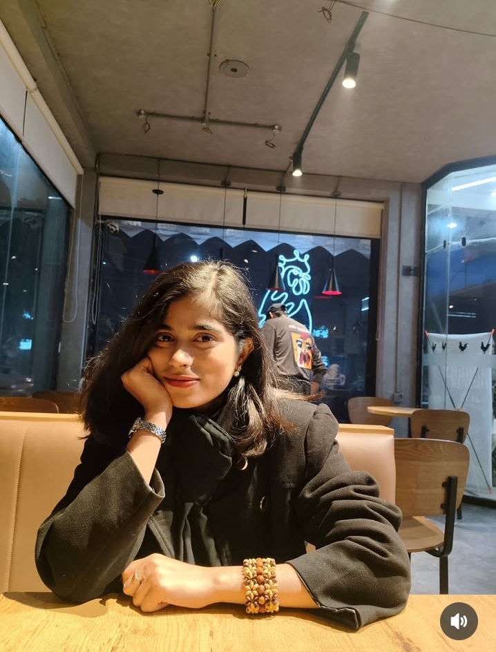

Nine days is not a long time.
But sometimes a person starts feeling familiar
before time has any reason to explain it.
You had a headache last night.
A small thing. You probably didn't think twice about mentioning it.
That’s the thing about slowly caring for someone.
You don’t always realise it immediately.
It just appears in small moments
like hoping they slept well, or wondering if they’re okay.

There is something calm about you, Saniya.
You seem simple, confident, and natural.
And I think that’s something I genuinely like about you.
Some people arrive in your life softly.
No announcement. No drama.
They just become a small part of your day.
And slowly, you start noticing their absence.


I don't know what Allah has written ahead.
I'm not saying this to rush anything,
or to make you feel something you don't.
I'm saying it because it's honest
and honest things deserve to be said quietly,
without any expectation.
This isn't a grand gesture.
I don't usually make things like this.
But some people make you want to try.
I made this because I wanted to do something small for you.
Nothing too big. Nothing too serious.
Just something simple and honest.
In these few days, talking to you has felt nice.
Your simplicity, your confidence,
and the way you carry yourself I noticed all of that.
I hope your head feels better today.
And I hope you woke up feeling okay.
This page is not asking you for anything.
It is just a small way of saying
I am glad I met you,
and yes, I do smile a little differently
when i think about you.
Made for you.
With a little care,
and a lot of honesty.